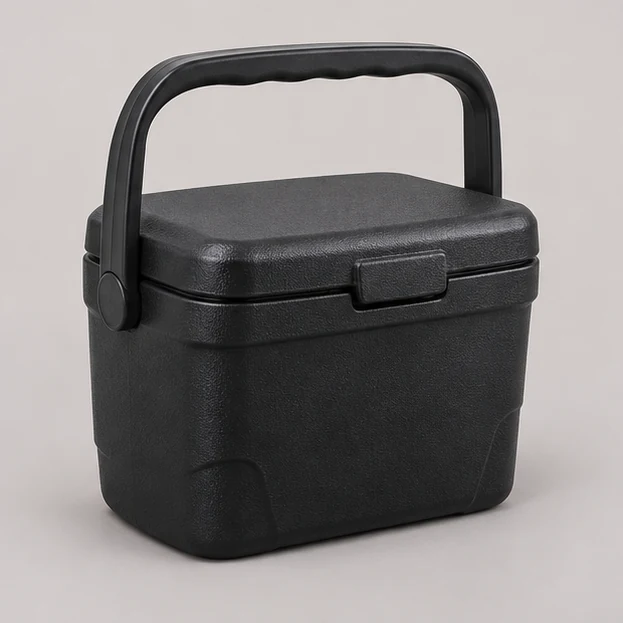

On-course gear
Six-Pack Cart Cooler
Part No. GCA-JW132-02-00
$85.99 USD
A removable hard cooler holds six drink cans or four 16.9 oz. water bottles with ice.
Vehicle fitment
Yamaha Drive Fleet · 2013–2016Yamaha Drive2 Fleet · 2017–2019
Check fit detailsRetailer sets final price, availability and shipping.
Will it fit?
| Model | Catalog years |
|---|---|
| Yamaha Drive Fleet | 2013–2016 |
| Yamaha Drive2 Fleet | 2017–2019 |
Check for a standard golf bag area. The Yamaha rear-facing seat and several other basket-mounted accessories can prevent installation. See Yamaha’s compatibility list before pairing accessories.
Installation notes
- Check the space beside the golf bags and the list of conflicting accessories on Yamaha’s product page.
- Use the kit instructions to fit the bracket and hardware on the chosen side.
- Place the cooler in the bracket, open its lid and lift it by the handle to confirm access with bags in place.